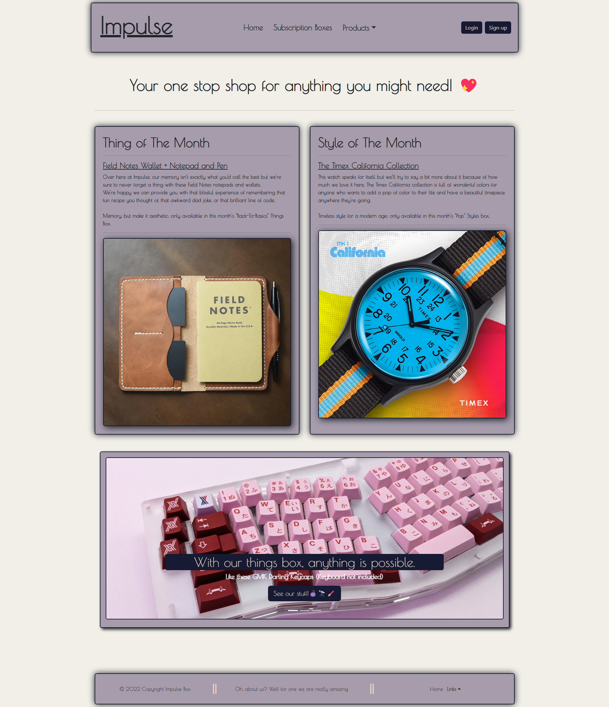

A little bit about me, I'm a compassionate individual who is
pivoting from a career in the mortgage industry and entering the
world of software engineering. I hope to use my programming
skills to generate innovative solutions and am excited to
further my knowledge in the world of technology!
Impulse
A subscription box with impulse buys catered directly to you!

In this app, I implemented an authentication server to verify credentials and issue a JWT token using a private key.
The front end was created with React and JavaScript, and I utilized Docker so Impulse is able to run on multiple operating systems! This application is broken up into 2 microservices. Technologies used include React, Django Docker, Restful API, Poller, PGAdmin, and PostgreSQL.
Conference Creator
Sign up, book, and present at conferences!
An application that may be used by an organization to plan and run either an in-person or virtual conference for thousands of attendees and presenters. Technologies used include React, Docker, RabbitMQ, RESTful APIs, and Third-Party API.
Lyle's Dealership
A site for dealerships to keep track of employees, guest and inventory!
An application that provides a REST API for the frontends of the Autosales microservice, AutoService microservice, and Inventory microservice. Technologies used include Django, React, Docker, RESTful API, Poller, and PostgreSQL.